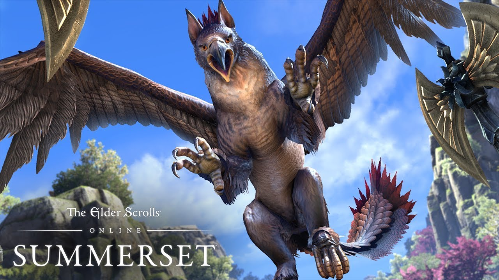
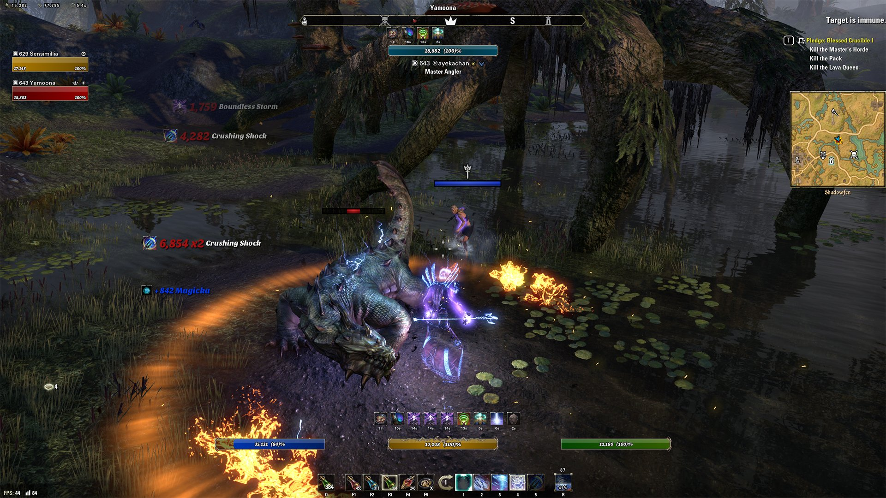

RANKED FOURTH: ELDER SCROLLS ONLINE
As part of the Elder Scrolls franchise, Elder Scrolls Online was not only able to tap into its loyal fanbase, but was also able to ride off the hype of its critically acclaimed open world RPG Skyrim, praised by many as the best PC Game of all time. It is not a surprise then that ESO has also found success in its MMORPG market, piggybacking off its franchise for content and fame. Although its initial release was a bit lacking in terms of content and user interface and experience, developers have listened to their community and were able to fix many of its initial underlying issues following a re-release expansion. Similar to Guild Wars 2, ESO has changed its payment model in 2015 from a subscription one to free to play with in game microtransactions. The game plans to bring back veteran players and also bring in new players alike with its new expansion Summerset, scheduled to be released sometime in May 2018. Unlike many of the other games in my ranking, ESO has its biggest player base and population located in Europe, rather than North America.
Details:
Release Year: 2014
Payment Model: Free to Play with Microtransactions
Latest Expansion Date: June 2017
Next Expansion Date: May 2018
Total Accounts Created: Over 8 Million
Current Active Playerbase: Around 1 Million
Company: Bethesda Softworks
Release Year: 2014
Payment Model: Free to Play with Microtransactions
Latest Expansion Date: June 2017
Next Expansion Date: May 2018
Total Accounts Created: Over 8 Million
Current Active Playerbase: Around 1 Million
Company: Bethesda Softworks

Rankings: